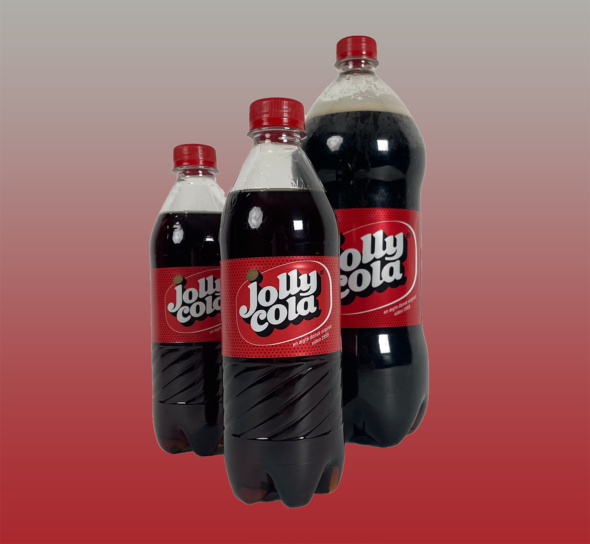
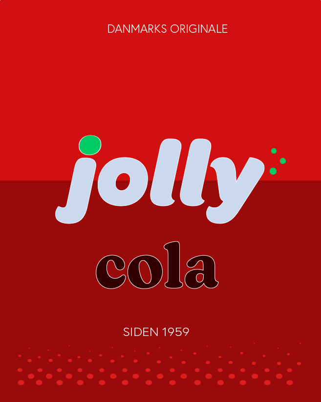

For it's more than just a jolly good cola
Jolly, den ægte, den originale, den danske. Alt det er Jolly. I 1959 slog flere danske bryggerier sig sammen og dannede Dansk Coladrik A/S. Her blev der så produceret den første danske coladrik; Jolly Cola.
Et indblik bag kulisserne
1959 er langt tid siden og hvis man ser på Jolly gennem årene, så kan man se at vi altid holdt fast på at være originale. Det betød også, at der ikke skete meget forandring gennem årene. Forandring kan virke skræmmende, men vi har besluttet at tage dette skridt.

Jolly´s nye koncept
Vores nye design er fængende og moderne, men tager samtidig udgangspunkt i det gamle. Vi besluttede os at give hele brandet et frisk pust. Der er mere til Jolly Cola end den coladrik hele historien startede med. Flere forskellige smag, uden sukker, danskvand. Listen går videre. Derfor har vi besluttet at ændre vores navn fra Jolly Cola til Jolly. Med dette navn inkluderer vi ikke kun alle vores dejlige smag, men viser hvad vores brand går ud på.

Passende til jul besluttede vi at fejre vores rebranding ved at give noget tilbage til vores kunder. Nyd den dejlige smag af vores nye juledrik og få chancen til at vinde fire biletter til Nordisk Film Biografen. Du må selv vælge hvor og hvornår det skal være og hvilken film det er du gerne vil se.
Jolly ønsker en dejlig jul og et godt nytår!